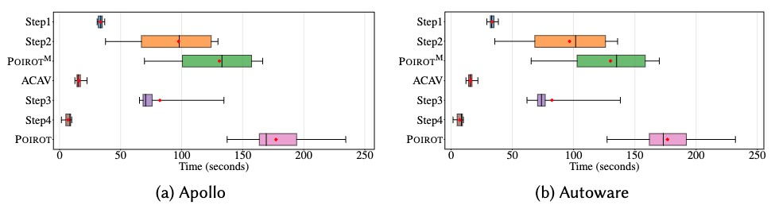

Poirot: Automatic Root Cause Analysis of Safety Violations in ADS Simulation Testing via Hypothetical Reasoning
Abstract
With the rapid development of autonomous driving systems (ADSs), it has become critical to ensure their operational safety, leading to the widespread adoption of simulation testing. While existing scenario-based simulation testing approaches have demonstrated effectiveness in detecting safety violations, they often fall short in providing insight into the underlying causes of these violations, which is an essential capability for improving the safety and reliability of ADSs.
To address this limitation, we propose a two-phase novel framework, Poirot, for root cause analysis in simulation testing via hypothetical reasoning. Specifically, in the module-level localization phase, Poirot replays the violation scenario, and identifies the faulty module by hypothetical reasoning, i.e., iteratively replacing an actual module with an idealized module and checking whether the violation persists. In the component-level localization phase, given the identified faulty module, Poirot either employs hypothetical reasoning with a suspicion-guided search strategy or leverages causal analysis, to efficiently narrow down the fault space and identify the faulty component.
We evaluate Poirot on two ADSs, i.e., Apollo and Autoware, on a comprehensive benchmark that includes a total of 80 real and injected faults along with their triggering scenarios. Poirot achieves 85.67% module-level accuracy and 83.62% component-level accuracy in root cause analysis. Our ablation study shows that our suspicion-guided search strategy in Poirot effectively reduces the exploration of the fault space by 58.77%, leading to a 65.41% reduction in the time for fault localization. Finally, applied to two scenario-based simulation testing methods, i.e., AvFuzzer and MoDitector, Poirot attributes 425 violation scenarios to 8 faults, cutting debugging time by 96.89% compared to manual analysis in practice.
The paper has been submitted to FSE 2026.
Prototype and Documents

We propose Poirot, a two-phase root cause analysis framework by constructing and evaluating counterfactual executions to first identify the faulty module ùìúfaulty ∈ {localization, perception, prediction, planning, control} and then the faulty component ùìífaulty ∈ {ùìí0, ùìí1, ‚Ķ, ùìí|ùìí-1|} within ùìúfaulty. The key challenge lies in (1) how to obtain idealized messages for each module and component, and (2) how to reduce the fault space.
Specifically, in the module-level localization phase, Poirot (i.e., Step-1 in Figure) replays the violation scenario to collect idealized messages from the simulator, and aligns them temporally to obtain the idealized module messages. Next, Poirot (i.e., Step-2 in Figure) constructs idealized message flows for modules in the ADS, and applies hypothetical reasoning to identify ùìúfaulty by iteratively replacing actual modules with idealized modules, which are virtual modules publishing idealized messages, and checking whether the violation disappears.
In the component-level localization phase, if ùìúfaulty ∈ {localization, perception, prediction}, Poirot (i.e., Step-3 in Figure) obtains the idealized component messages and actual component messages within ùìúfaulty via scenario replaying. By performing differential analysis between these two types of messages, Poirot computes the suspicion score for each component in ùìúfaulty. Then, Poirot applies a suspicion-guided search strategy on the component message graph (CMG) of ùìúfaulty to reduce the fault space and accelerate the identification of the faulty component ùìífaulty. If ùìúfaulty ∈ {planning, control}, Poirot (i.e., Step-4 in Figure) employs causal analysis to enable fine-grained localization of ùìífaulty in planning or control modules.
We have implemented a prototype of Poirot with 2,536 lines of C++ and Python code. The prototype of Poirot and documents are available on GitHub.
Benchmark

Our benchmark consists of 42 collision scenarios, 14 running red light scenarios, 10 crossing yellow line scenarios, and 14 scenarios where the ADS fails to reach the destination, and it covers the 5 modules and 28 unique components in these two multi-module ADSs. The time duration of these scenarios ranges from 10 seconds to 35 seconds. Each case in the benchmark includes the ADS version, the violation description, the violation symptom, the triggering scenario, the fault type, the root cause (i.e., the faulty module, and the faulty component), and the corresponding fix method.
Effectiveness Evaluation (RQ1)
Poirot effectively identifies the faulty module with an average gain of accuracy by 85.67% across modules, compared to the baseline approach, and further localizes the faulty component within the identified faulty module with a high accuracy by 83.62%.
Efficiency Evaluation (RQ2)
The construction and evaluation of counterfactual executions in Poirot incur an average time overhead of 114.69 seconds compared to the baseline. Nevertheless, this additional cost is acceptable given the effectiveness of Poirot in pinpointing the faulty module and the faulty component responsible for the violations.
Ablation Study (RQ3)
Our suspicion scores provide the promising faulty components, decreasing the average time consumption by 30.09%, and narrowing down the fault space exploration for faulty component localization by at least 30.18%. Besides, our search strategy adopted in Poirot further enhances the efficiency of faulty component localization by 65.41% in time consumption and 58.77% in fault space exploration, respectively.
Usefulness Evaluation (RQ4)
Poirot effectively provides reliable fault localization for safety violations in ADS simulation testing, attributing a total of 425 violations to 8 unique faulty components, reducing the time consumption by at least 96.89% compared to manual analysis.